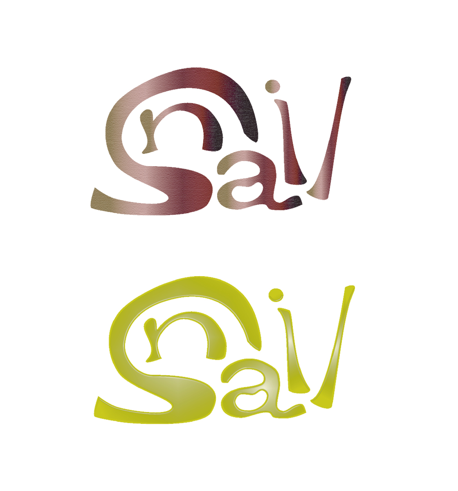

Snail
Graphic Design / Typography
Adobe Illustrator
「カタツムリ」を意味する「Snail」という文字をテーマにタイポグラフィを制作。単語を見たときに、「i」と「l」がカタツムリの目の部分に見えたことをきっかけに、文字そのものをカタツムリの形に見立てて構成した。カタツムリの特徴的なフォルムと「Snail」の文字が自然につながるよう、文字の形や配置を工夫し、言葉から連想したモチーフを視覚的に表現。